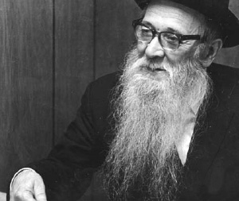

Leading the Charge for Lubavitch in America
He was the spirit of life amongst Askanei Chabad in the United States. He was one of the founders of Agudas HaT’mimim, one of the directors of Agudas Chassidei Chabad, the teacher and guide of the Achei and Achos HaT’mimim, and the one who served as the contact man between Anash in the United States

The father and son began their journey to Lida, and after three days of travel they met a bearded Jew in the train station who asked where they were going. When he heard they were heading for Lida, he began eagerly talking to them. Between the lines they understood that the man was an emissary of the yeshiva and he suggested that the boy learn in the yeshiva located in Meitzar and not in the yeshiva located in Choma since older boys learned there and they had secular books, etc.
Father and son wondered what to do and the son decided they were going. Since there were several more hours until the train would come, they waited there in the hopes that they would meet someone else who was familiar with the yeshiva.
A man entered the station and asked, “Are you going to Lida?” When they said that they were, the man said angrily, “You will give your son to a man who stood on the platform with an immodest woman? I am a Misnaged. If you want your son to remain a G-d-fearing Jew, take him to Lubavitch.”
When the man left, the father asked his son, “What should we do? In Lubavitch, you won’t be able to continue learning secular studies as you did so well in our town.”
The boy began to cry and managed to get out the words, “Let us go to Lubavitch.”
That is how a child, not yet 12, arrived at the yeshiva in Lubavitch. After passing the test and being accepted, he remained in Tomchei T’mimim.
At first, his father paid for his room and board, but after Pesach, his father told him he couldn’t pay for him anymore. The boy then ate lunch with the talmidim in the younger grades. In addition, he received two and a half rubles from the yeshiva each month. That was a small amount; it was just enough for him to buy some cookies in the morning and supper at night. From then on, until the end of his yeshiva days, he had to resort to essen teg, at first only on Shabbos and then all week.
In 5672, he would occasionally duck out from the Chassidus learning and learn Nigleh at that time. The mashgiach, R’ Shilem, was afraid that the talmidim did not want to learn Chassidus and so he appointed an older boy to each younger boy. Yisroel was paired with Nota Pinsky and Avrohom Pariz; Avraham made a deep impression on him.
About a year later, the boy had his first yechidus with the Rebbe Rashab, a yechidus for which he had prepared for some time, reciting the bedtime Shma each day for hours. The Rebbe told him to learn another two hours of Chassidus a day, in addition to the four hours they were learning in yeshiva, not including learning Tanya. The Rebbe also told him to daven while focusing on the meaning of the words.
After another year, R’ Shilem encouraged him to learn Maamarei Chassidus of the Mitteler Rebbe. At that time, R’ Shilem worked on getting the much older bachurim to learn these maamarim. There were some who learned Imrei Bina 12 hours a day. But Yisroel declined and said the Rebbe’s hemshechim were enough for him, because these explain Chassidus wonderfully.
R’ Shilem asked him to research a certain inyan in Chassidus for him and to explain the answers that appear in the maamer that seem, at first glance, to be contradictory. After a few days, he tested the boy. R’ Shilem’s smile indicated that the boy had succeeded.
IN MILITARY PRISON
In 5676/1916, the bachur Yisroel went to the draft office since he was of draft age. The doctors examined him and gave him a blue card. This meant he would be drafted in war time, and since World War I was raging, he was eligible for immediate army service. However, all the boys born in that year had been drafted already. The clerk didn’t know what to do. Yisroel was considered a deserter and could be arrested at any moment.
R’ Jacobson thought he could arrange to be a rabbi in the town of Novo-Zhuravichi. At this time, the Rebbe Rashab was one of the main activists working on getting exemptions for rabbanim, but when he went to consult with the Rebbe who was in Slavyansk, the Rebbe negated the idea. Instead, he told him to go to Radatz (R’ Dovid Tzvi Chein) in Chernigov.
When he arrived in Chernigov, he stayed with an older resident of the city. According to Russian law, every citizen had to report all those staying in his house within 24 hours, but R’ Yisroel, who knew that his papers were not in order, refrained from showing them. After a month, there was an inspection and he had no choice but to show his papers. Thus, he soon found himself in military prison.
His friends found out about this the same day that he was imprisoned. They managed to bring him food and his t’fillin. The thin young man found himself among tough Russian inmates who threatened him and mocked him. Fortunately for him, another Jew who caught on inspection day was put into the same cell. When he saw Yisroel, he went over and shook his hand and said, “In Lubavitch they called me Berel Chernigover.” When he saw how the inmates were treating Yisroel, he shouted and threatened that he would call the guards. Since this was a military prison, and most of the inmates were deserters, they were afraid to touch the Jew.
R’ Yisroel sat in jail for four days. There wasn’t enough room for everyone to sleep and some had to sleep on the floor. There was one chamber pot for all of them in the middle of the room which was emptied once or twice a day.
At this time, Radatz went to R’ Mordechai Paley who had connections with government ministers and he was able to get Yisroel released. He received another draft notice to appear, but this time he was dismissed by a military medical committee.
In Chernigov, he merited to receive and learn from the outstanding Radatz, who had a tremendous influence on him. R’ Yisroel wrote a chapter in his book, Zichron Livnei Yisroel about his unique customs and extraordinary punctiliousness.
ADVENTURES ON THE WAY TO AN IMPORTANT YECHIDUS
In 5678/1918, the war between Germany and Russia approached Lubavitch. In addition, the communists rose to power that year and the country was soon thrown into economic distress. Consequently, R’ Shilem Kuratin and R’ Eliezer Kaplan, menahel of the yeshiva, asked R’ Yisroel to go to the Rebbe Rashab in Rostov to ask him what to do with the yeshiva in the event that the Germans captured Lubavitch. Likewise, they wanted to know what to do with their families and how they should support them.
On his way, R’ Yisroel passed through Oryol where, a few months earlier, the youngest talmidim had been sent. When he arrived there, he was shocked to find out that the talmidim had been influenced by the atmosphere there and had taken out secular books from the library. He felt it imperative that they be taken out of there.
On Motzaei Shabbos, he left Oryol on a four day journey to Rostov. He took one mezonos roll with him. Other than that, he ate two or three apples and some sugar. When he arrived in Rostov, he went directly to the house of R’ Avrohom Liadier the Rebbe’s assistant, where he was supposed to stay. When they saw him, they immediately said, “There is someone sick with typhus here. If you stay here, you won’t be able to go to the Rebbe.”
He had no choice but to go straight to the Rebbe’s house where he gave the Rebbe a report about the yeshivos. He ended up staying with R’ Mordechai Gertzulin. R’ Yisroel told him that he had barely eaten for three days, but his host had no bread. R’ Yisroel drank a glass of tea and went to sleep, hungry.
In the morning, when he went to shul to daven, they told him that the Rebbe Rayatz was looking for him urgently. When he went to the Rebbe’s house, the Rebbe Rayatz told him in his father’s name that the talmidim in the zal should remain in Lubavitch and the chadarim should move to Kremenchug. The Rebbe told him to go to Kremenchug to arrange that the householders would contribute to the yeshiva the money needed for the meals during the week and would have the bachurim eat with them on Shabbos.
R’ Yisroel asked the Rebbe Rayatz whether he could stay for Shabbos and hear a maamer. In addition, he politely mentioned that he hadn’t eaten in days. As to the first question, the Rebbe said he would ask his father. As far as the food, he told he would arrange it for him; he told the gabbai to prepare a meal for him. Then he came back and reported that his father said he could remain for Shabbos.
On Motzaei Shabbos, R’ Yisroel had yechidus. The Rebbe Rashab spoke to him about the idea of moving from Lubavitch. The Rebbe said that in his opinion the Germans would not conquer the town, and even if they did, they would not control it as forcefully as they did back home. It would be possible to learn in groups in houses or, alternatively, to cross the border back to Russia. The Rebbe concluded, they would send a telegram to Lubavitch, instructing the talmidim not to leave. If they left, “the light would be lacking.”
At the end of the yechidus, the Rebbe escorted him to the door and blessed him, “May Hashem protect you from everything.”
When he arrived at the station the next morning, he was frightened to see a long line of people waiting for the train, some of them having waited since the night before. There was no way he could buy a ticket for that day so he had to buy a ticket for the next day.
Waiting with the many other passengers to board a train, Yisroel watched as German planes flew overhead. No bombs were dropped, but most train schedules were interrupted. Later, he found out that before he arrived in Rostov, the Rebbe had sent a telegram that they should leave Lubavitch and the talmidim had left the town. When a second telegram arrived with instructions to stay, the talmidim were no longer there. Thus ended an era in the history of Lubavitch.
IT IS IMPOSSIBLE TO LIVE WITHOUT THE REBBE!
Pesach 1920, shortly after he married, R’ Yisroel went to visit his parents in Zhuravichi. On Erev Shabbos, Parshas Shmini, he met a Chassid who told him the sad news about the passing of the Rebbe Rashab a few weeks earlier.
When he arrived home, he was unable to tell his wife what had happened. In the shul of R’ Mordechai Yoel Duchman, where he davened, all were heartbroken. The next day, when R’ Yisroel had an aliya, he burst into tears at the pasuk, “When such things happened to me …” – – should Aharon carry on with the avoda despite the deaths of his sons?
In the shul, there was a young man by the name of Avner who was deformed with a hump on his back and on the front of his body. He was married, and in his youth had been by the Rebbe. He was agitated all Shabbos. “How can we live now, without the Rebbe?” On Motzaei Shabbos he died.
It was only the following Shabbos, when the elders in the Lubavitch shul encouraged the younger ones by reminding them that the Rebbe had left them his son, that they all got up and danced.
THE YESHIVA IN HOMIL
In 568/1922-3, R’ Yisroel lived in Homil. On Simchas Torah the Chassidim farbrenged about it being hard to send talmidim to Lubavitch and they decided to start a yeshiva in Homil. After receiving the Rebbe’s approval, the yeshiva opened. R’ Yechezkel Feigin was appointed as the rosh yeshiva and R’ Yisroel Jacobson took responsibility to raise his salary. This required him, despite his bashfulness, to spend two days a week collecting money for the yeshiva, which was located in the Babushkin Shul.
The shul was small and crowded for the talmidim, but when they voiced the need for a bigger shul, the members of the small shul heatedly argued that the mitzva was theirs. So the talmidim remained in the shul, and they brought long tables so there would be room for the bachurim.
That year, the communists began their harsh decrees against the yeshivos. The Chassidim were unsure of what to do. At a meeting of the administration of the yeshiva, it was decided that R’ Feigin would go to Moscow to ask the Rebbe what to do.
When he arrived in Moscow, the Rebbe told him to travel to Poltava since the Tomchei T’mimim there did not have a menahel.
The yeshiva in Homil remained without a mashgiach and menahel. R’ Boruch Duchman said that he was willing to be the menahel, but he needed the Rebbe’s approval. R’ Yisroel, who heard that the Rebbe was going to the Ohalim in Lubavitch, went there and had a brief yechidus at the train station, at which time the Rebbe approved the appointment.
MOVING TO THE UNITED STATES
R’ Yisroel’s parents moved to the United States. After Shavuos 1923, when he was with the Rebbe in Rostov, he asked the Rebbe in yechidus if he should consider moving to the US, since he was left alone after their move. The Rebbe said it was a good idea and he should go, but that it was not yet the proper time.
When R’ Yisroel told R’ Shaul Dov Zislin about this yechidus, the latter said: I have a brother in the US who is asking me to come. I don’t even want to ask the Rebbe. My brother writes that he has a kosher food store where he prepares food packages and customers come on Shabbos to take the food for the Shabbos meals.
Throughout 5684, R’ Yisroel prepared to move. After Rosh HaShana 5685, a meeting of Anash was held in Leningrad where the Rebbe was, and it was decided that they had to try and leave the country and find other places to live. Every Tamim who lived in a different country should try to bring other talmidim to his country from Russia. R’ Yisroel was given the responsibility for the US, since he was the only one present at the meeting who was getting ready to travel there. The decisions made at the meeting were submitted to the Rebbe.
Until he left, the Rebbe Rayatz told R’ Yisroel to serve as the mashpia in the yeshiva in Homil. After a few months, the documents asking him to become a rabbi arrived. They had been sent by his parents from the US. Upon receiving his exit visa from Russia, he left on the night of 19 Kislev 5686 for the United States.
Upon arriving in the US, he was questioned at Ellis Island. He explained that although he had just one dollar in his pocket, the balabatim at the shul would take care of renting an apartment. That is also what the balabatim said when they came to pick him up and were also questioned.
Shabbos morning, R’ Yisroel went to the shul where he had been appointed to serve as rav. The shul was actually a store that was rented to be used as a shul. On that Shabbos, they davened there and the following Sunday the shul was closed. Apparently, the shul had completed its birurim on the day that it brought the person to the United States who was responsible for bringing Lubavitch to America.
ANSHEI BOBROISK
The shul had completed its task, but now the rabbi did not have a job. After six weeks without work and no food at home, R’ Jacobson was appointed as the rav of the Anshei Bobroisk shul in Brownsville, through the efforts of some members of the congregation who hailed from his home town of Zhuravichi.
On Motzaei Shabbos Parshas Shmini 5686/1926, graduates of Yeshivas Tomchei T’mimim who lived in New York convened in the home of Rabbi Eliyahu Simpson and founded Agudas HaT’mimim, the organization whose job it was to arouse the Chassidic sentiments of those T’mimim who had crossed the Atlantic to America. Many of the T’mimim had a feeling of belonging and a desire to help out, even though they had left the Yeshiva.
At this time, R’ Yisroel was also appointed as a member of Aguch in America, the organization founded two years earlier by R’ Dovid Shifrin. The offices were located in the factory of the Kramer brothers, a factory named for their father who had died not long before and who had served as president of the organization. As soon as he was appointed, a letter arrived from Europe with a request that he raise money to print Likkutei Torah.
R’ Yisroel tried out different way to accomplish the task. First, he asked R’ Dovid Shifrin if he should approach the Kramer brothers to donate the costs of the printing l’ilui nishmas their father. R’ Dovid did not think they would be interested. Attempts to get other Chassidim to donate did not provide the sum R’ Yisroel had set his sights on, either.
On 24 Teves 5687, R’ Yisroel arranged a farbrengen in his home and he spoke to the balabatim about the Baal HaTanya and about the importance of the printing. They immediately made their donations and he raised the full amount he needed. A thousand copies were printed and were sold out. Dozens of Nusach Ari shuls, where simple Russian Jews davened, bought it. In many of these shuls, there was nobody capable of learning it, but it was bought as a segula and inspired many Jews to draw closer to their origins.
The first assignment that R’ Jacobson set out to complete – – the goal for which he had been sent – – was to bring T’mimim to the US. He was able to get papers for many T’mimim from Russia and Eretz Yisroel, including R’ Moshe Akselrod and R’ Sholom Posner. Unfortunately, here were also those for whom, despite his best efforts, he was unable to obtain visas, including R’ Levi Yitzchok Schneerson, the Rebbe’s father.
THE REBBE RAYATZ’S VISIT TO THE UNITED STATES
When the Rebbe Rayatz visited the United States in 5690/1930, R’ Yisroel accompanied him the entire time that he was in New York. He even brought the Rebbe an esrog. After hearing that R’ Yisroel’s esrog was more mehudar than his own, the Rebbe asked him to bring his own esrog. When R’ Yisroel saw that the Rebbe wanted his esrog, he gave it to him immediately.
On that visit, R’ Yisroel brought his daughter to the Rebbe because she was cross-eyed. The Rebbe asked her to look at him. When she did, the Rebbe said, “See, she sees straight. From then on, she was no longer cross-eyed.
***
So much more could be written about the groundbreaking work he did during the years leading up to the Rebbe Rayatz’s transplant of Lubavitch from Russia to American soil, his founding of Yeshivas Achei T’mimim in New York in 1932 for young men who had become close to Chabad, his involvement in helping save the Rebbe Rayatz from war-torn Poland, his pivotal role in establishing the mosdos of the Rebbe Rayatz in America, his founding in 1944 of branches of the central yeshiva in Pittsburgh, New Haven, and in the Bronx (where his son-in-law, R’ Mordechai Dovber Altein served as rosh yeshiva), as well as his tireless efforts in service of the new Rebbe and his vision of spreading the wellsprings, giving shiurim in Chassidus in Hadar HaTorah and serving as menahel of Beis Rivka. Lubavitch and the Jewish world lost a great Chassid and loyal soldier on 17 Sivan 1975.
Dov Levanon. "Leading the Charge for Lubavitch in America." Beis Moshiach, no. 880 (May 23, 2013).